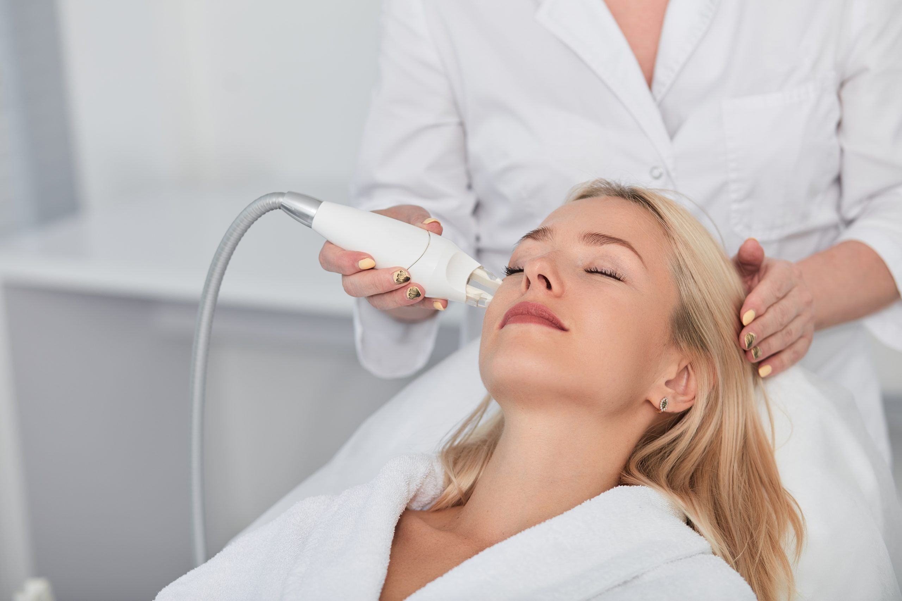

FORMACIÓN MÉDICA ESPECIALIZADA
La élite de la formación dermatológica a un clic de tu consulta
Especialízate con programas diseñados por y para médicos. Obtén tu titulación con créditos ECTS y metodología 100% online.
Explorar Másteres →
★ 4.9/5 valoración
👥 +2.400 alumnos
✓ Créditos ECTS

Próximo inicio
Máster en Dermatología Clínica
60 créditos ECTS · 12 meses